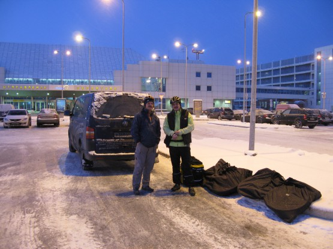
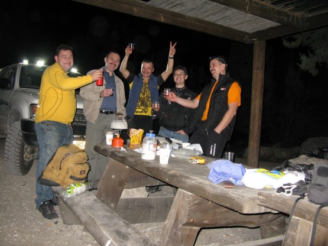

Главное в Израиле - это Люди.
Такую фразу можно считать лозунгом этого похода. Замечательные люди помогали нам во время подготовки и в каждый из дней похода. Такого доброжелательного отношения и желания бескорыстно помогать я не встречал, пожалуй, с 80х годов. Но обо всем по порядку.
Мысль поехать на велосипеде в Израиль появилась несколько лет назад, когда еще существовали визы, но остановило тогда не это, а отсутствие компании. С тех пор воды утекло много, появилось понимание, что в одиночных походах есть своя прелесть и что если очень хочется, то надо обязательно ехать. Просматривая очередной раз список дешевых билетов наткнулся на предложение авиакомпании Эль Аль - прямой рейс Санкт-Петербург - Тель-Авив. Мало того, что рейс прямой и не слишком дорого, так у Эль Аль уникальные правила провоза велосипедов - бесплатно в дополнение к основному багажу (UPD, к сожалению, уже не актуально). Решено - лечу, благо есть как раз неделя отпуска. Взял билеты туда на 1, обратно на 8 декабря.
Опубликовал объявление на ВелоПитере, но на компанию особо не надеялся. Как ни странно со мной связался Андрей Полищук (Poland) и изъявил желание присоединиться. Долго пугал его трудностями предстоящего маршрута, но безрезультатно. На самом деле испугаться было от чего. Основная идея - проехать по Иудейской пустыне и горам исключительно по грунтовым дорожкам и тропинкам, подальше от цивилизации. Маршрут был составлен в основном по материалам сайта www.velik.org. Местные ребята ездят по этим маршрутам без велорюкзаков в формате однодневных покатушек. Хочется особо отметить качество проработки маршрутов на сайте velik.org и отдельно поблагодарить Игоря Скорубского, который занимается там этим вопросом. Я настолько качественно подготовленной информации еще не встречал.
Правда у этой медали оказалась обратная сторона. Я реально завис, читая огромное количество описаний маршрутов. Хотелось проехать каждый из них, но ходовых дней всего пять (шестой на осмотр Иерусалима). Как быть? Решение вполне логичное - нужно увеличивать дневной километраж. Внимательно посмотрел описания на velik.org, понял, что 50 в день считается много для этих мест и. . . заложил 70. Наверное, в этом максимализме и есть причина, по которой мне так трудно найти компанию для похода, но Андрей отреагировал на такой километраж очень спокойно - значит решено. Оставшееся до похода время пролетело быстро. Несколько раз созванивались по скайпу с Игорем Скорубским, который терпеливо отвечал на все наши вопросы до глубокой ночи, опять же ему огромное спасибо за это.
Вся подготовка к походу прошла под знаком взаимопомощи. После публикации поста на ВелоПитере Сергей Радолицкий передал мне карты, оставшиеся после их прошлогоднего похода. Дядя Вова вызвался помочь в Иерусалиме. Илья Гуревич предложил подвести от Эйлата до Телль-Авива. До Эйлата мы не доехали, но все равно очень приятно.
День отлета. В Питере -15.

Про то, что у авиакомпании Эль Аль есть собственная служба безопасности и что в Израиле принято задавать массу вопросов при отлете мы уже знали, но то, что это будет уже Пулково оказалось новостью. Нас позвали одновременно к двум представителям службы безопасности авиакомпании и начали задавать вопросы:
. . . .
-а где работает ваш товарищ?
-как давно вы с ним знакомы?
-вы сами собирали свой рюкзак?
-есть ли у вас визитка?
-а страховка? А она спортивная?
. . . .
Суммарно вопросы заняли около 15 минут. Три раза наши интервьюеры отходили совещаться и снова задавали вопросы. Процедура не самая приятная, с другой стороны надо понять, что для страны находящейся под угрозой терактов в течение десятилетий это вполне оправдано. Просто говорите правду и настройтесь правильно, в конце концов, 15 минут это не так уж и много.
Комментарий Андрея
Да мы знали, что ребята из службы безопасности авиакомпании Эль Аль достаточно дотошные. Об этом поёт каждый турист, посетивший Израиль посредством этой авиакомпании. Шоу началось сразу же при сдаче багажа. …. • вы родственники? • как давно катаетесь вместе? • в каких путешествиях участвовали вместе? • а страховка спортивная? На какую сумму? Покажите… и всё это вопрос - проникновенный взгляд – иногда отход для общения к коллеге, который дербанил Саню. • посредством каких инструментов вы предполагаете ориентироваться? Посредством GPS и карт…. • каких карт? И вот здесь началось небольшое шоу для пассажиров и сотрудников службы безопасности. Я получил огромное удовольствие, показывая наши карты. Начал с 500 метровок (формат А4), с удовольствием рассказывая о предполагаемом маршруте и где имеются залежи этих карт, и откуда они с удовольствием качаются. Но самого пика данное общение достигло, когда я достал упаковку скомпанованых карт на иврите (чертёжный лист, в который запихали 6×А3 – иначе совсем мелко получалось), пять листов… Сотрудник взял всю бумагу и исчез в недрах аэропорта… Минут десять не было. Пришёл, поблагодарил, отдал.
Дальше все было вполне приятно. Велосипеды приняли в багаж без вопросов и дополнительной платы. Кстати не забудьте при покупке билетов уведомить о том, что летите с велосипедом (я забыл и потом отдельно звонил в Эль Аль), в программе у девушки на приемке была специальная отметка о наших байках.
Комментарий Андрея
Мы негласно подготовились к козням сотрудников при приёмке велов: каждый имел распечатку из Свода правил Эль Аль о бесплатном провозе вела. У меня не получилось купить билет посредством Сети. Мудохался двое суток. В конечном итоге пошёл и купил в кассе ТрансАгентства. При покупке билета оператор исполнила мне бумагу, где указала, что я лечу с байком туда и обратно.
Вкусно покушали в самолете. Посмотрели фильм и виды из иллюминатора.Комментарий Андрея
Часть времени демонстрировали документальный фильм об Израиле. Теперь понимаю, что демонстрировали север Израиля. Красиво. Очень хотелось уж вкрутить….
Комментарий Андрея
Мы проходили через разные стойки. Мозги слегка покомпосировали. Девчёнка молодая. - а почему вы не желаете, чтобы вам ставили штамп в паспорте? Возможно, в дальнейшем, я захочу поехать на велe в те станы, где при условии штампа вашей страны в моём паспорте у меня могут возникнуть трудности. Это ведь всем путешественникам известно. - а в какие страны вы собираетесь? - а когда вы собираетесь? Да, как воедино сойдутся много факторов… - нет, пожалуйста, точнее, когда вы собираетесь и какой маршрут предполагаете?... Короче прошёл. За мной россиянин, та же просьба, геммора не было. В общем, чем то не приглянулся, как Саня на обратном досмотре, но это другая песня…
Душевно. Велосипеды привозят на отдельной тележке, практически одновременно с основным багажом. Собираем велосипеды. Все исправно - хорошо, когда перелет без пересадок.
Пока Андрей собирает велосипед, иду искать sim-карту для телефона. Спрашиваю в книжном магазинчике справа в зале аэропорта. Девушка предлагает взять карту оператора orange и еще некий пакет big talk. Долго не могу понять, что симки у них стоят отдельных денег. Наконец доходит, плачу 160 шекелей, 80 карта и 80 на разговоры (1 шекель примерно 8 рублей), остаются сомнения, что дороговато, но Игорь потом пояснил, что это нормальные цены.
Теперь мы со связью. Отправляем SMS родным. Кстати, SMS в Россию с этой симки, в отличие от местных разговоров, стоят не слишком дешево. Пытались с нее позвонить, через +7 - не проходит, хотя SMS на номера с +7 отправляются успешно, так и не поняли, как звонить в Россию(UPD кстати, в инструкции написано, но нам было некогда читать ), но оно вроде как не сильно надо было, SMS вполне хватило. В зале не многолюдно и наши разложенные велосипеды привлекают внимание.
), но оно вроде как не сильно надо было, SMS вполне хватило. В зале не многолюдно и наши разложенные велосипеды привлекают внимание.
Подходят девушки и предлагают нам угоститься пончиками, которые называются суфгания. Угощаемся, очень вкусно. Спасибо вам добрые люди. Дело в том, что мы прилетели в первый день Хануки, традиционно еврейского праздника, а суфгания наряду с зажиганием ханукии одна из традиций этого праздника. Как я люблю вкусные традиции Кстати, поход наш по срокам строго совпал с празднованием Хануки в этом году, может по этому нам так везло все время? Ну да вернемся в аэропорт. Подошли двое ребят из Канады, оказались велосипедистами, долго расспрашивали про наше снаряжение и велосипеды и желали нам удачи. Приятно, но времени нет совсем. Выезжаем из аэропорта, звоним Игорю. Мы еще из Питера договорились, что он купит для нас газ, воду и джифу(о ней позже). Игорь ждет нас в точке примерно в 10 км от аэропорта по пути нашего следования, причем не один, а с Сашей и Пашей. Они приехали на машинах специально пообщаться с нами. Как же это приятно, когда прилетаешь в незнакомую страну, а тебя там ждут люди, готовые помочь, причем не за деньги.
Возникает атмосфера некой легкости и непринужденности общения, разговариваем, смеемся. Ребята поясняют, где лучше стать с палаткой. Совсем не хочется расставаться - зовем их приехать к нам на стоянку выпить по 50 грамм Джек Дениэлса - к нашей радости соглашаются. Мы крутим педали в гору, до леса Бен Шумен и ждем машину. Странно, но их нет. Оказывается, ребята успели смотаться домой за коньяком и закусками. Накрываем стол. Получается, что это они угощают нас. Первый раз за эту поездку жалею, что не взяли с собой сувениров, даже нечего оставить на память. За разговорами время летит незаметно, ребятам нужно рано на работу, а нам в путь. Очень не хочется, но пора расставаться. Чудесный вечер. Спасибо вам, друзья! Палатку решили не ставить, ночь теплая, явно за 20. Кинули пенку и завалились спать. Спалось комфортно, не замерзли, хотя спальники у нас с Андреем 600 и 800 грамм соответственно.
Саша, Игорь, Андрей, Паша, Саша(я).

Дневной пробег - 15 км. Трек.